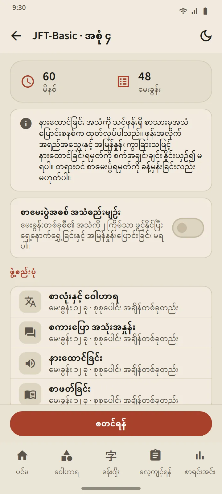
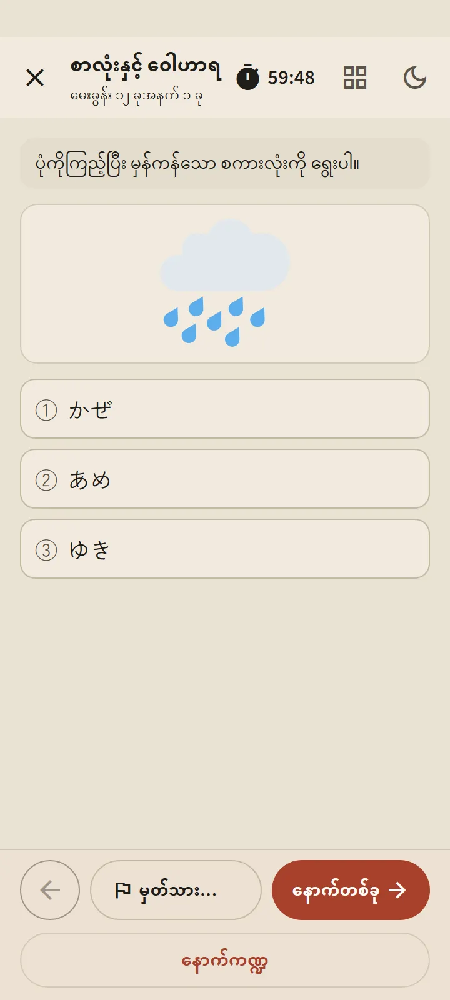
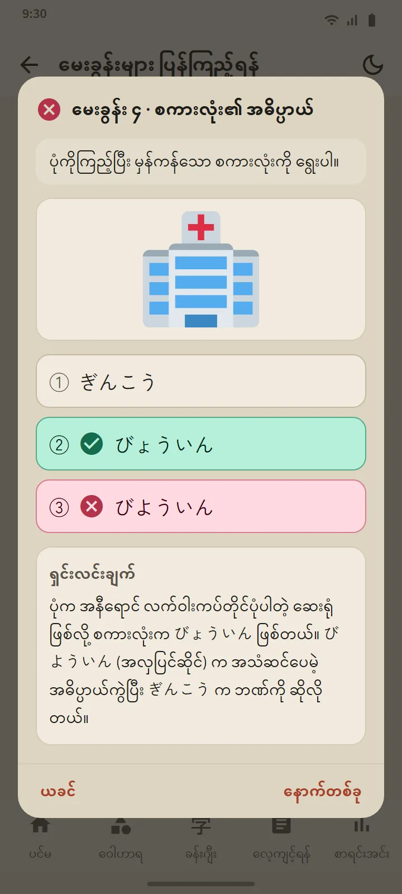

အဆင့်ခြောက်ခု၊ အစု 24 စု
လေ့ကျင့်ရန် တက်ဘ်ရှိ အဆင့်ကတ်တစ်ခုစီက အဆင့်စာမျက်နှာကို ဖွင့်ပေးသည်- စတင်ရန် ခလုတ်၊ နံပါတ်စဉ်ပါ အစုအကွက်များနှင့် မှတ်တမ်း။ အစုအားလုံး ပြီးသည်နှင့် ရောနှောလေ့ကျင့်ခန်း ဖွင့်ပြီး သင်မမြင်ဖူးသေးသော မေးခွန်းများကို အရင်ထားသည်။ အစုအသစ်များကို အက်ပ်အပ်ဒိတ်ဖြင့် ရရှိမည်။
| စာမေးပွဲ | အစုများ | အစုတစ်ခုလျှင် မေးခွန်းများ | အချိန် |
|---|---|---|---|
| JFT-Basic | 8 | 48 | 60 မိနစ် |
| JLPT N5 | 8 | 68 | 90 မိနစ် |
| JLPT N4 | 2 | 85 | 115 မိနစ် |
| JLPT N3 | 2 | 102 | 140 မိနစ် |
| JLPT N2 | 2 | 107 | 155 မိနစ် |
| JLPT N1 | 2 | 101 | 165 မိနစ် |


မေးခွန်းပုံစံများသည် တကယ့်စာမေးပွဲများကို လိုက်နာသည်
JFT-Basic မေးခွန်းများသည် ရွေးချယ်စရာ သုံးခု (သဒ္ဒါတွင် လေးခု)၊ သင်ယူသူ၏ ဘာသာစကားဖြင့် အခြေအနေများနှင့် မေးချက်များ ပါပြီး တရားဝင်နမူနာမေးခွန်းများကဲ့သို့ မေးခွန်းများစွာတွင် ပုံပါသည်။ JLPT မေးခွန်းများသည် ရွေးချယ်စရာ လေးခု၊ အဆင့်နှင့်ကိုက်ညီသော ဖူရိဂနာ၊ ပုံစံအမျိုးမျိုးရှိသော ဖတ်စာများ- ပုံပြင်တိုများ၊ မှတ်စုများ၊ ကြေညာချက်များ၊ မက်ဆေ့ချ်များ၊ အီးမေးလ်များနှင့် အချက်အလက်ဇယားများ ပါသည်။ အစုတိုင်းကို မထုတ်ပြန်မီ စစ်ဆေးထားပြီး တရားဝင်မေးခွန်း မည်သည့်အရာကိုမျှ မကူးယူထားပါ။
မစတင်မီ အကျဉ်းချုပ်မျက်နှာပြင်က ထိုအစု၏ ဖွဲ့စည်းပုံ- အပိုင်းများ၊ မေးခွန်းအရေအတွက်နှင့် အချိန်ကို ပြသည်။ အချိန်သည် တကယ့်စာမေးပွဲကို လိုက်နာသည်- JFT-Basic တွင် ပေါင်းစပ်အချိန်တစ်ခု၊ JLPT တွင် အပိုင်းတစ်ခုစီအတွက် အချိန်။ ရှေ့ဆက်သွားပြီးနောက် ယခင်အပိုင်းသည် စာမေးပွဲခန်းထဲကဲ့သို့ပင် ပိတ်သွားသည်။ သံသယရှိသော မေးခွန်းများကို အလံမှတ်နိုင်ပြီး ခဏထွက်နိုင်ကာ (နာရီဆက်သွားနေသည်) လေ့ကျင့်ရန် တက်ဘ်မှ ပြန်ဆက်နိုင်သည်။


သင့်ဖုန်း၏ ဂျပန်အသံဖြင့် နားထောင်ရေး
နားထောင်ရေး စာသားများကို သင့်ဖုန်း၏ ဂျပန် text-to-speech စနစ်က ဖတ်ပြပြီး စကားပြောသူတစ်ယောက်စီအတွက် မတူညီသော အသံ သုံးသည်။ တကယ့်စာမေးပွဲကဲ့သို့ အဖြေရွေးချယ်စရာများကို ကြားရုံသာ ကြားရပြီး စာမရိုက်ပြပါ၊ JFT-Basic နှင့် N5 တွင် ပုံရွေးချယ်စရာများ သုံးသည်။ “စာမေးပွဲအစစ် အသံစည်းမျဉ်း” ခလုတ်က ပြန်ဖွင့်မှုကို တကယ့်စာမေးပွဲ ခွင့်ပြုသလောက်သာ ကန့်သတ်သည်- JFT-Basic တွင် နှစ်ကြိမ်၊ JLPT တွင် တစ်ကြိမ်။
အသံသည် ဖုန်းတစ်လုံးစီမှ လာသောကြောင့် စက်အလိုက် အရည်အသွေး ကွာခြားသည်။ ဖုန်းတွင် ဂျပန်အသံ မရှိသေးလျှင် အက်ပ်က ထည့်သွင်းနည်းကို ပြပြီး ထည့်သွင်းသည်အထိ နားထောင်ရေးအပိုင်းကို ကျော်သွားသည်။

တရားဝင်စကေးအတိုင်း ရလဒ်၊ ထို့နောက် မေးခွန်းတိုင်းကို ရှင်းပြ
JFT-Basic ရလဒ်များကို 10–250 မျဉ်းပေါ်တွင် 145၊ 175 နှင့် 200 တို့တွင် အမှတ်အသားများ၊ အဆင့်အမည်များဖြစ်သော A1၊ A2.1၊ A2.2 နှင့် တကယ့်စာမေးပွဲတွင် အဆင့်တစ်ခုစီ ဘာအတွက် သုံးသည်ကိုပါ ဆွဲပြသည်။ JLPT ရလဒ်များသည် အမှတ်ပေးအပိုင်းတစ်ခုစီကို ၎င်း၏ အနည်းဆုံးမှတ်နှင့် နှိုင်းယှဉ်ပြသည်၊ အကြောင်းမှာ တကယ့်စာမေးပွဲတွင် အပိုင်းတစ်ခုသည် အနည်းဆုံးမှတ်အောက်ရှိလျှင် ကျရှုံးသောကြောင့်ဖြစ်သည်။ နှစ်မျိုးလုံးတွင် အပိုင်းအလိုက်နှင့် မေးခွန်းအမျိုးအစားအလိုက် မှန်ကန်မှု ရာခိုင်နှုန်း ပါသည်။
မေးခွန်းများ ပြန်ကြည့်ရန် ခလုတ်က မေးခွန်းတိုင်းကို သင့်အဖြေ၊ မှန်သောအဖြေနှင့် ရှင်းလင်းချက်တို့နှင့်အတူ ဖွင့်ပြသည်၊ နားထောင်ရေး မေးခွန်းများတွင် စာသားလည်း ပြသည်။ ရှင်းလင်းချက်များကို ဘာသာစကား 12 မျိုးဖြင့် ရနိုင်သည်။ အဆင့်တစ်ခုစီ၏ မှတ်တမ်းတွင် နောက်ဆုံး လေ့ကျင့်မှုများကို သိမ်းထားပြီး ရမှတ်ဇယားသည် စာရင်းအင်း တက်ဘ်တွင် ရှိသည်။
ဤရမှတ်များသည် တိုးတက်မှုကို ခြေရာခံရန် ခန့်မှန်းချက်သာ ဖြစ်ပြီး သင်၏ တရားဝင်ရလဒ်ကို ခန့်မှန်းခြင်း မဟုတ်ပါ။
ပုံစံအတွက် သင်ခန်းစာ ရှိသော သဒ္ဒါ မေးခွန်းများသည် "ဤပုံစံကို လေ့လာရန်" ဖြင့် ထိုသင်ခန်းစာသို့ တိုက်ရိုက် ချိတ်ပေးပါသည်။


အခမဲ့နှင့် Premium
အစုတိုင်းကို အခမဲ့ဗားရှင်းတွင် ဖွင့်ထားသည်။ စတင်ရန် နှိပ်ပြီးနောက် ထိုအဆင့်၏ နောက်လေ့ကျင့်မှုကို 7 ရက် လော့ခ်ချထားသည်၊ အခြားအဆင့်များ ဆက်ဖွင့်ထားပြီး မှတ်တမ်းနှင့် ရှင်းလင်းချက်များကို ဘယ်တော့မှ မလော့ခ်ချပါ။ လော့ခ်ချထားစဉ် ကြော်ငြာကြည့်၍ ထပ်ဆောင်း လေ့ကျင့်မှုတစ်ကြိမ်ကို ဖွင့်နိုင်သည်။ Premium တွင် နားချိန်မရှိပါ။ မေးခွန်းမျက်နှာပြင်များတွင် မည်သူ့အတွက်မျှ ကြော်ငြာ ဘယ်တော့မှ မပေါ်ပါ။